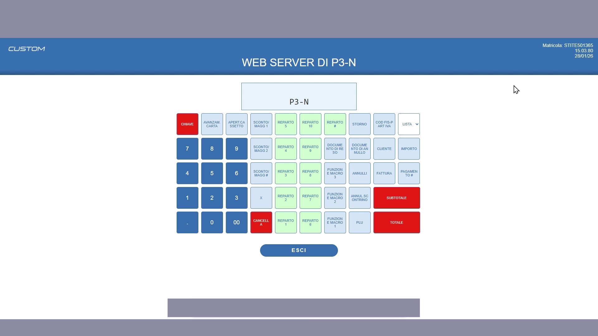
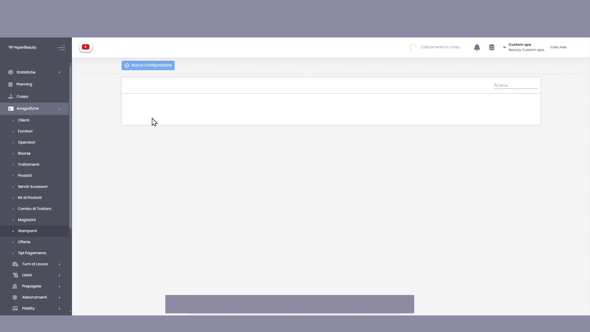
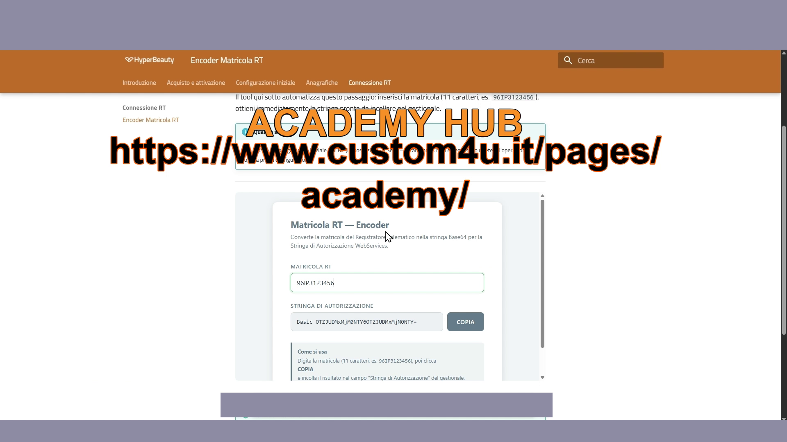
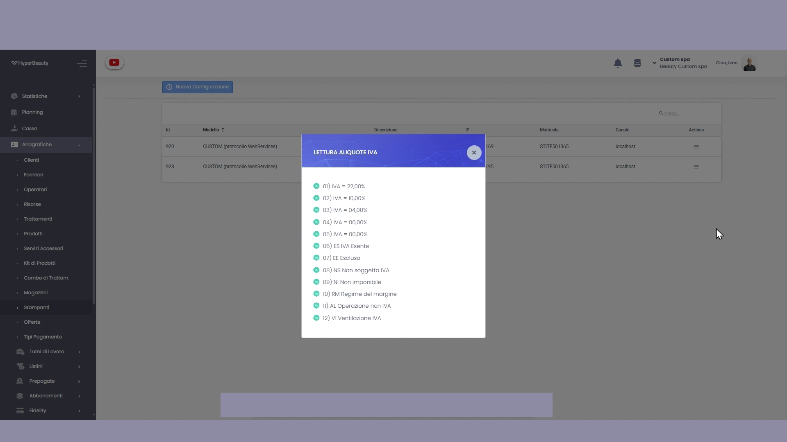
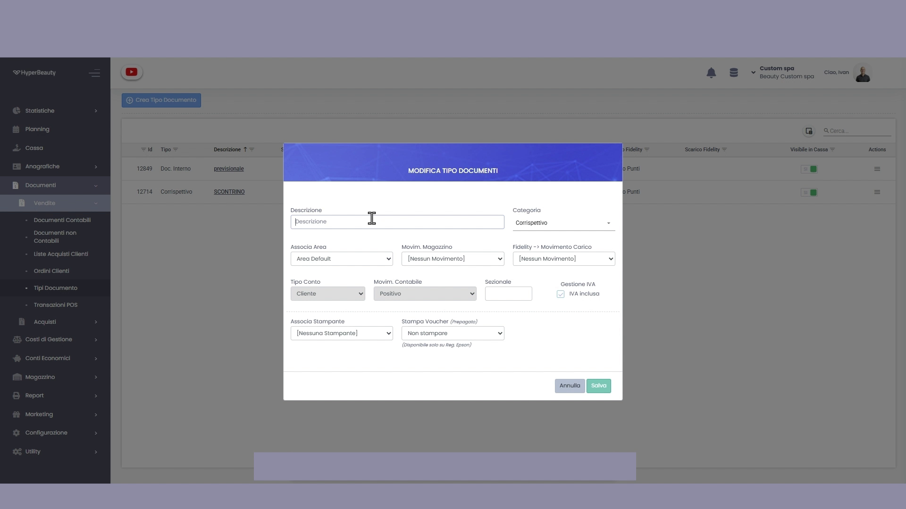
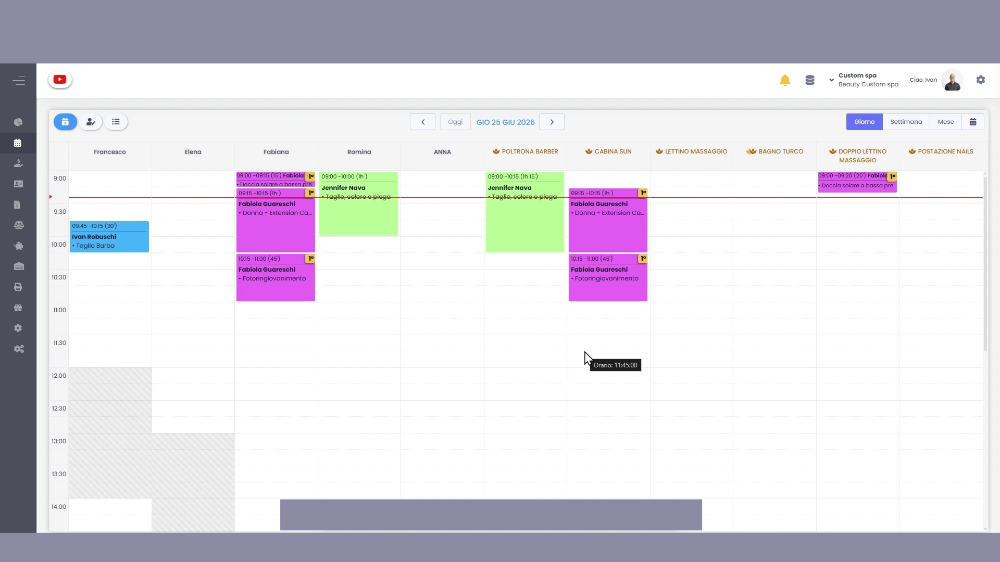

Collegamento Registratore Telematico Custom
Questa guida copre la procedura completa di collegamento tra un Registratore Telematico Custom (modello con protocollo WebService) e HyperBeauty — dalle programmazioni fisiche sull'RT fino all'impostazione del documento fiscale di default in agenda.
Prima di iniziare
Avere a portata di mano: l'indirizzo IP che si vuole assegnare all'RT, la matricola del registratore (etichetta sul corpo fisico), e accesso al web server dell'RT dal browser del PC locale.
Parte 1 — Programmazioni sull'RT Custom
Il web server del RT Custom (accessibile via browser digitando l'IP corrente) consente di eseguire tutte le programmazioni necessarie senza usare la tastiera fisica.

P911 — IP statico Ethernet
Accedere alla programmazione P911 e impostare un indirizzo IP statico sulla rete locale del salone. Una volta salvato, eseguire un ping di test dal PC per verificare che la comunicazione tra PC e RT funzioni correttamente.
IP statico obbligatorio
Se l'RT riceve un IP dinamico dal router (DHCP), l'indirizzo può cambiare al riavvio e HyperBeauty perderà il collegamento. L'IP statico garantisce che la stampante sia sempre raggiungibile allo stesso indirizzo.
P016 — Tabella IVA
Accedere a P016 e non modificare nulla. La tabella IVA di default deve rimanere esattamente com'è — sarà HyperBeauty a leggere e usare le aliquote già programmate.
P120 — Programmazione reparti
Accedere a P120 e programmare i primi due reparti:
| Reparto | Descrizione | Prezzo | Codice IVA Reparto |
|---|---|---|---|
| 1 | TRATTAMENTI |
0,00 | 1 |
| 2 | PRODOTTI |
0,00 | 1 |
Modalità FPU
Prima di procedere con la configurazione nel gestionale, mettere l'RT in modalità FPU tramite il comando 222 + CHIAVE sul tastierino fisico.
Parte 2 — Configurazione in HyperBeauty
Valori di default sede
Percorso: Configurazione → Sede → Valori di Default
Impostare IVA al 22% e valuta Euro. Salvare.
Nuova configurazione stampante
Percorso: Anagrafiche → Stampanti → Nuova Configurazione

Compilare tutti i campi del form:
| Campo | Valore |
|---|---|
| Modello | CUSTOM (protocollo WebServices) |
| Descrizione | Es. STAMPANTE FISCALE |
| Indirizzo IP | IP statico impostato in P911 |
| Matricola RT | Matricola dell'apparecchio (es. STITE501365) |
| Comunicazione | LOCALHOST |
| Stringa di Autorizzazione | Basic [matricola:matricola in Base64] |
Generare la Stringa di Autorizzazione

La Stringa di Autorizzazione si ottiene codificando la matricola in formato Base64. Usare il Tool Encoder Matricola RT disponibile in questo corso: inserire la matricola nel campo e cliccare COPIA — la stringa Basic ... è pronta da incollare nel campo del gestionale.
Opzioni di Cassa
Nella stessa schermata, configurare le Opzioni di Cassa:
| Opzione | Impostazione |
|---|---|
| Vendita Prepagate | ✅ Multiuso — selezionare |
| IVA Buoni Multiuso | N2 Non Soggette ⚠️ non N2.1 né N2.2 |
| Lotteria degli Scontrini | ✅ Selezionare |
| Punti Fidelity | ✅ Stampa su scontrino |
| Residuo Prepagate | ✅ Stampa su scontrino |
SALVA.
Parte 3 — Lettura aliquote IVA e reparti
Dalla schermata Anagrafica Stampanti, cliccare le tre linee orizzontali (≡) a destra della stampante appena configurata.
Lettura Aliquote IVA
Selezionare Lettura Aliquote IVA. Il gestionale si connette all'RT e legge in automatico tutte le aliquote programmate.

Il sistema mostra le aliquote lette direttamente dall'RT (22%, 10%, 4%, esenzioni, ecc.). Verificare che siano presenti e corrette — se mancano, ripetere la procedura P016 sull'RT.
Configurazione Reparti
Tornare al menu ≡ della stampante → Reparti. Tramite i tre puntini → Modifica, configurare Reparto 1 e Reparto 2 con gli stessi dati impostati sull'RT in P120:
| Reparto | Descrizione | Codice IVA | Natura |
|---|---|---|---|
| 1 | TRATTAMENTI |
1 (22%) | Trattamenti |
| 2 | PRODOTTI |
1 (22%) | Prodotti |
Il Codice ATECO lasciarlo invariato come unico.
SALVA, poi tornare in Anagrafica Stampanti → ≡ → Settaggio Reparti per confermare.
Parte 4 — Creazione Tipo Documento "Scontrino"
Percorso: Menu laterale → Documenti → Vendite → Tipi Documento → Crea Tipo Documento

Compilare il form con questi valori:
| Campo | Valore |
|---|---|
| Descrizione | SCONTRINO |
| Categoria | Corrispettivo |
| Associa Area | Area Default |
| Movimento | Scarico Vendita |
| Fidelity → Movimento Carico | Carico Punti |
| Gestione IVA | ✅ IVA Inclusa |
| Associa Stampante | Selezionare la stampante fiscale creata |
| Stampa Voucher | Prezzo Esposto |
SALVA.
Parte 5 — Documento di default nel Planning

Percorso: Planning → ⚙️ ingranaggio in alto a destra → Configurazioni
Scorrere in basso fino alla sezione Generali e impostare:
Documento di Default = SCONTRINO (o il nome scelto nel passaggio precedente)
Da questo momento ogni incasso avviato dall'agenda genererà automaticamente uno scontrino fiscale tramite l'RT Custom collegato.
Riepilogo procedura
| Fase | Operazione | Dove |
|---|---|---|
| 1 | P911 — IP statico + ping di test | Web server RT |
| 2 | P016 — NON modificare tabella IVA | Web server RT |
| 3 | P120 — Reparti 1 (Trattamenti) e 2 (Prodotti) | Web server RT |
| 4 | Modalità FPU (222 + CHIAVE) | Tastierino RT |
| 5 | Configurazione → Sede → Valori Default (IVA 22%, Euro) | HyperBeauty |
| 6 | Anagrafiche → Stampanti → Nuova Configurazione | HyperBeauty |
| 7 | Genera Stringa di Autorizzazione Base64 | Tool Encoder RT |
| 8 | Lettura Aliquote IVA | HyperBeauty |
| 9 | Configurazione Reparti | HyperBeauty |
| 10 | Documenti → Vendite → Tipi Documento → SCONTRINO | HyperBeauty |
| 11 | Planning → Configurazioni → Documento Default = SCONTRINO | HyperBeauty |
Documento a cura di Custom S.p.a. — HyperBeauty Training Program — Versione 1.0 — Giugno 2026